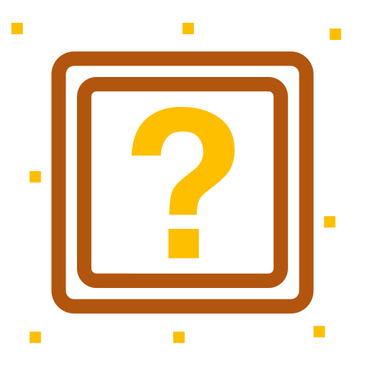
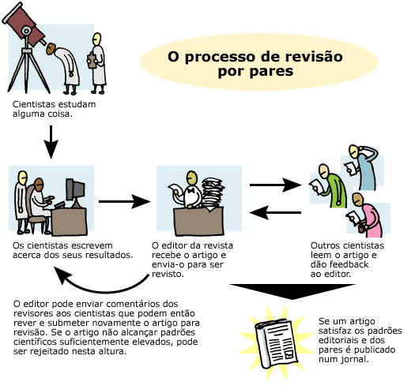
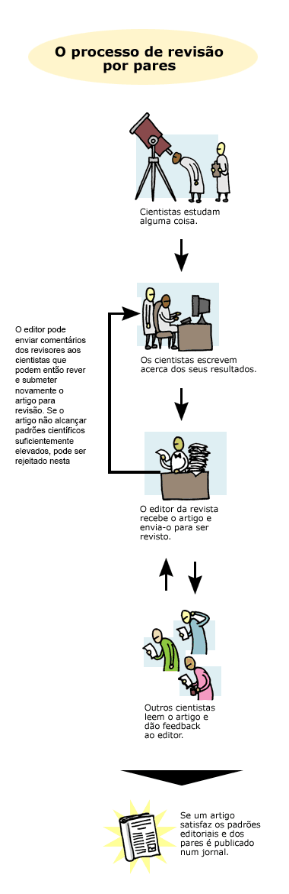
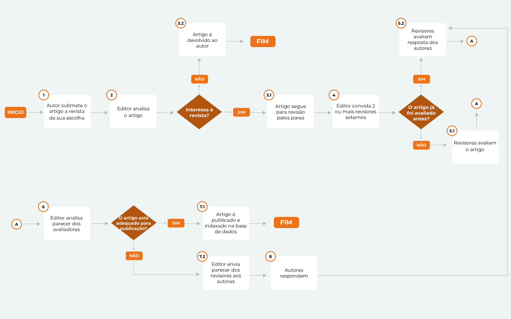
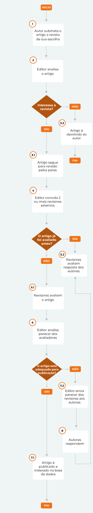

Série 3 | Curso 1
Acesso Aberto
Aula 5
Implicações na Comunicação Científica
Nessa aula poderemos compreender os meandros das publicações científicas.
Aproveite o conteúdo e desejamos a você bons estudos!
Panoramas das Revistas Científicas
O número de revistas científicas existentes hoje para todas as áreas do conhecimento é pelo menos 35.000: 12.872 listadas na base DOAJ (Directory of Open Access Journals) e 22.295 na base Scopus (controlada pela editora Elsevier). Juntas, estas revistas publicam mais de 2.000.000 de artigos a cada ano. Estes números são o resultado do acúmulo de três séculos e meio de disseminação do conhecimento científico, que tem a sua origem no ano de 1665, quando foi fundada a revista "Philosophical Transactions of the Royal Society". Esta revista ainda continua publicando artigos científicos.
Saiba mais:
Antes do surgimento da Phil.Trans. R. Soc. a forma padrão de divulgação da ciência era através de livros - por exemplo, o livro de Galileo Galilei, "Dialogo sopra i due massimi sistemi del mondo", publicado em 1632.
O início de circulação da revista "Philosophical Transactions" trouxe duas mudanças importantes para o cenário da publicação científica:
Muita coisa mudou ao longo destes trezentos e cinquenta anos de publicação científica no formato de artigos, mas duas perguntas sempre pairam sobre este meio:

-
1) Como sustentar a circulação de um periódico?
Do ponto de vista da operação de uma revista científica, outras questões devem ser igualmente formuladas:
- Quem é o público alvo, i. e, leitores/cientistas/estudantes em busca de atualização?
- Que informação disseminar, i. e, quem serão os autores/cientistas desejosos de veicular a sua produção intelectual/científica?
Responder adequadamente a essas perguntas significa definir as condições mínimas para o êxito da revista ao longo do tempo
- 2) Quem deve arcar com os custos de divulgação?

De um modo geral, as revistas científicas operam em ambiente de permanente incerteza financeira, que também é típico da ciência contemporânea. Este ambiente de incerteza propiciou o florescimento de um modelo que parecia funcionar relativamente bem do ponto de vista comercial: o modelo de assinatura, isto é, o leitor (leia-se bibliotecas) paga para obter acesso. Este modelo no entanto, sofreu forte pressão da comunidade científica e de entidades financiadoras para mudar o seu pilar de sustentação: a restrição de acesso.
Estas pressões resultaram, entre outros efeitos positivos, no surgimento de um modelo de publicação científica que eliminou praticamente todas as barreiras de entrada na atividade editorial, propiciando o acesso universal ao conteúdo dos artigos publicados. O surgimento de revistas exclusivamente digitais e de acesso livre permitiu que uma parte significativa do conhecimento gerado atualmente pudesse ser lido, discutido e compartilhado por qualquer pessoa em qualquer lugar do mundo (desde que tenha acesso a internet). Isto era algo inimaginável até o final dos anos 1990.
No entanto, este modelo “acesso aberto” - exclusivamente digital e sem versão impressa - veio acompanhado de uma novidade: o “article processing charge (APC)”, isto é, o autor (ou seu financiador) paga para publicar o artigo científico em acesso aberto. Em consequência desta novidade, descortinou-se uma oportunidade de negócios muito atraente na editoração científica.
Até então, o “negócio” de publicar artigos científicos em meio impresso era uma exclusividade de organizações acadêmicas e de poucas grandes empresas editoriais, necessitando de grandes somas de capital para entrar em operação.
| Revistas exclusivamente digitais e de acesso livre | |
|---|---|
| Vantagens | Desvantagens |
| Oferece uma grande facilidade como negócio: a virtual ausência de barreiras técnicas, regulatórias ou financeiras, tornando-se em uma atividade ao alcance de qualquer indivíduo com um investimento mínimo | O crescimento acelerado da atividade editorial trouxe também conflitos de interesse e a banalização da publicação científica |
Mas eis a pergunta que realmente interessa:
esta quantidade de artigos é igualmente traduzida em qualidade, influencia, relevância?
Como a relação quantidade x qualidade não é linear, alguns estudiosos entendem que é chegado o momento de frear o ímpeto de “publicar continuamente” a qualquer custo (4). Há um sério risco da sociedade deixar de acreditar nos benefícios da atividade científica.
A revisão por pares
O que é a revisão pelos pares
O processo de avaliação do conteúdo de um artigo científico por cientistas externos a revista que recebeu um artigo para publicação (em inglês, peer review). Este processo é coordenado pelo editor-chefe da revista ou pelos editores auxiliares designados pelo editor chefe. Alguns requisitos mínimos devem ser obedecidos neste processo: os revisores a serem escolhidos (no mínimo dois) não podem pertencer ao mesmo departamento/laboratório dos autores do artigo, não podem ter sido colaboradores recentes dos autores, e sobretudo, devem ser especialistas no tema da pesquisa relatada no artigo.


Após um prazo pré-estabelecido (2 a 4 semanas, dependendo da area de conhecimento) cada revisor separadamente envia o seu parecer para análise e decisão do editor responsável. Se o revisor questiona os dados, metodologia e outros aspectos do artigo, e sendo do interesse do editor em continuar o ciclo de avaliação, estes questionamentos são enviados aos autores para as devidas respostas. Após a resposta dos autores, o editor encaminha o texto com as respostas/modificações aos revisores para uma nova avaliação.
Este processo de avaliação/resposta poderá se repetir várias vezes, até que revisores e editores concordem que o artigo esteja pronto para publicação. Pode ocorrer também que os autores não consigam (ou não queiram) responder adequadamente aos revisores, neste caso o editor toma a decisão de encerrar o ciclo de avaliação, rejeitando o artigo.
Saiba mais:
Atualmente, nas ciências biomédicas, este processo de avaliação pode demorar de 01 a 06 meses, às vezes um ano. Nas áreas mais competitivas (e nas revistas de mais prestígio), este processo leva em média 01 a 02 meses.
Esquema do ciclo de avaliação pelos pares


Classificação de revisão pelos pares
Modalidade:
-
1) Fechada
O parecer dos revisores (questionamentos, sugestões, correções), as respostas dos autores e a decisão final do editor não são expostas publicamente. Apenas editores, revisores e autores têm conhecimento do processo.
Quem pratica: é o processo padrão para a maioria das revistas científicas, tanto as tradicionais (revistas por assinatura e versão impressa) como as revistas acesso aberto inteiramente digitais.
-
2) Aberta
Todo o procedimento está visível ao público: parecer dos revisores, respostas dos autores, decisão do editor. Os pareceres e respostas são incorporados ao conjunto de arquivos do artigo, podendo, em alguns casos, serem citados independemente do artigo principal (é atribuído um objeto identificador digital DOI, a cada parecer). Esta revisão aberta pode identificar ou não os revisores.
Quem pratica: algumas revistas recentemente criadas (e. g., F1000) e plataformas de publicação de algumas organização de financiamento a pesquisa (e.g. plataforma da Fundação Bill & Melinda Gates, Wellcome trust).
Tipos de revisão:
-
1) Revisão anônima simples
Os revisores não são identificados aos autores, mas revisores conhecem a identidade dos autores. É a forma mais comum de revisão de artigos científicos, sobretudo nas ciências naturais.
-
2) Revisão anônima dupla
Revisores não sabem a identidade dos autores, e estes não sabem quem são os revisores. Na teoria, o duplo anonimato garante uma avaliação exclusivamente do mérito do artigo, sem o viés causado pela identidade de autores, vínculo institucional, nacionalidade, gênero. Na prática, é difícil o completo anonimato, dada a facilidade de se obter informações nas bases de dados científicas.
-
3) Revisão identificada
Os nomes dos revisores são revelados para todos os que têm acesso aos pareceres. Este tipo de revisão é mais comum nas revistas e meios de publicação que abrem todo o processo de avaliação ao público.
Formato da revisão:
-
1) Revisão colaborativa
Um grupo de revisores é convidado pelo editor, e todos os pareceres individuais são reunidos e consolidados em único parecer.
-
2) Revisão massiva
O editor lança convites para várias dezenas de revisores cadastrados na revista (ou plataforma de revisão). A medida que os pareceres individuais são enviados para a revista, o editor seleciona os mais detalhados (se forem recebidos muitos pareceres) e os consolida para a sua decisão. É um procedimento relativamente recente, pouco utilizado até o momento.
-
3) Revisão em cascata
Os pareceres sobre um artigo em primeira submissão a uma determinada revista que decide rejeitá-lo, são encaminhados para uma nova submissão em outra revista. O editor desta última decide se aproveita aqueles pareceres ou encomenda novas avaliações com revisores diferentes. Este procedimento é utilizado por grandes editoras que publicam revistas de áreas correlatas (por exemplo, artigo para revista especializada em bioquímica de insetos, que depois de recusado pode ser encaminhada para revista de entomologia molecular ou biologia de vetores ou parasitologia etc)
-
4) Revisão terceirizada
Neste formato, um provedor (plataforma) oferece sem custo para os autores, um serviço de revisão pelos pares antes do artigo ser submetido a uma revista. O provedor do serviço se encarrega de convidar os revisores, cujos pareceres são enviados ao autor para as alterações, correções e melhorias do texto. No final do processo, o provedor emite um “certificado” de que o artigo foi revisto pelos pares, e os autores podem submeter o artigo a uma revista de sua escolha. Algumas revistas estão registradas no provedor, permitindo uma transferência direta do artigo. A revista que publica um artigo com o parecer de revisores convidados pelo provedor paga uma taxa pelo uso deste serviço. O pioneiro é o Peerage of Science (www.peerageofscience.org)
Pontos positivos e críticos da revisão de pares
| Pontos Positivo | Pontos Críticos |
|---|---|
| A revisão pelos pares desempenha um papel importante na ciência contemporânea, funcionando como um “elemento de certificação” da publicação científica. Pressupõe-se que todo o trabalho que passou pela avaliação de outros pesquisadores, de forma isenta e anônima, estabelece um padrão mínimo de qualidade e veracidade. | A rotina das publicações científicas têm revelado um cenário que destoa daquele projetado pelo “ideal” da avaliação dos pares. Vários desvios desse cenário ideal podem ser apontados com base em fatos da editoração científica, o que contribui para lançar dúvidas sobre a eficácia da revisão pelos pares como “certificador” da prática científica. São eles:
|
Em suma, a revisão pelos pares é um mecanismo muito importante para a boa divulgação/disseminação dos resultados da pesquisa científica, mas é preciso melhorar os seus procedimentos operacionais. É necessário ajustá-los às novas formas de comunicação científica, como por exemplo, a publicação imediata através de repositórios “pre-print”, estimulando o uso da Revisão Colaborativa Aberta e Identificada, com mecanismo de “atualização contínua” dos artigos e retirada daqueles com infração às boas práticas científicas.
A pre-publicação ou publicação imediata (pre-print)
O desejo inicial de qualquer cientista é divulgar o mais rapidamente possível o resultado de suas pesquisas. Um importante componente do conjunto de incentivos na carreira científica é a primazia da descoberta: ser a primeira pessoa no mundo a relatar um novo fato científico, uma nova teoria, uma invenção radical. Satisfeita esta condição de imediata divulgação, aguarda-se então a repercussão e o reconhecimento deste relato junto aos pares.
Sobre o termo pre-print:
Apesar de ser implementado de forma totalmente digital, sem interface impressa, o termo pre-print tem sido utilizado como uma referência aos tempos do artigo impresso, cujas cópias (“reprints) eram distribuídas aos leitores interessados.
Então, pre-print referia-se aquela versão impressa do artigo ainda não publicado (manuscrito) que poderia ser disponibilizado/distribuído (ou arquivado) em repositórios pessoais. O termo mais adequado, ao invés de pre-print, poderia ser “versão digital inicial”, ou “versão prévia” ou “artigo em publicação imediata” etc.
Fonte: Claude Pirmez, Memórias do IOC
Saiba mais:
Vídeo 6 - What are preprint? Legenda
Fonte: The Jackson Laboratory (2017).
Algumas características positivas dos pre-prints são listadas abaixo:
- Obter visibilidade imediata para o seu trabalho
- Permite que o público alvo leia e faça comentários, sugestões e correções.
- Sugestões podem ser utilizadas pelo autor para uma nova versão do artigo.
- Este processo “iterativo” poderá levar versões melhoradas do artigo.
- Permite 'avaliar' / 'testar' o interesse e alcance dos dados científicos antes de uma versão definitiva.
O quadro abaixo mostra uma comparação entre o que representa o modelo atual de publicação científica (em geral fechado) e a alternativa representada pelo repositório em pré-publicação (ressalvando, no entanto, que neste modelo alternativo há que se equacionar a questão da revisão pelos pares).
Já no quadro seguinte, lista-se algumas das características de dois repositórios para as ciências biológicas. Note a diferença na informação entre um outro: o biorxiv ressalta aspectos críticos do artigos em pré-publicação (pode conter erros etc), e o peerJ destaca pontos positivos (é gratuito, rápido etc).

Biorxiv
"Os autores podem usar o serviço Biorxiv para tornar seus manuscritos disponíveis como 'preprints' antes da revisão pelos pares. Isso permite aos demais cientistas: ler, discutir e comentar as descobertas imediatamente."
- Os artigos podem conter erros
- Trazem informações que ainda não foram avaliada pela comunidade científica

PeerJ
"Versão do manuscrito que ainda não foi revista pelos pares. Pode ser um esboço ou a versão final de um artigo. Um preprint não é a versão 'ahead of the print' ou artigos aceitos e disponibilizados online."
- Gratuito
- Disponível em 24 horas
- Recebe DOI
- Garante a precedência do trabalho
- Leitores podem comentar e questionar
- Novas versões ilimitadas
- Submeter ao peer reviewer posteriori
Saiba mais:
O Programa Scielo
O Programa SciELO vem promovendo seu alinhamento progressivo com as boas práticas da ciência aberta. Este alinhamento que deverá ocorrer nos próximos três a cinco anos promoverá uma mudança significativa nas políticas editoriais dos periódicos com implicações importantes na operação do fluxo operacional de avaliação de manuscritos, editoração, publicação e disseminação dos artigos.
Os avanços promovidos pela Ciência Aberta reforçam o conceito do conhecimento científico como um bem público que é um dos princípios do Programa SciELO, reconhecido globalmente pelo seu pioneirismo na adoção do acesso aberto aos artigos assim como pelo modelo de publicação com centralidade nas comunidades de pesquisa. A adoção proativa das práticas da ciência aberta pelos periódicos SciELO, por um lado, contribuirá para avançar o movimento como um todo, e, por outro, depende também das políticas e ações das agências, instituições de apoio à pesquisa, sociedades científicas e, em última instância, os pesquisadores. O ganho mais importante que advém a ciência aberta é o fortalecimento do caráter cooperativo da pesquisa, cuja conquista requer a cooperação de todas as instâncias envolvidas na pesquisa. O Programa SciELO está comprometido com o movimento colaborativo de implantação da ciência aberta no Brasil e nos países da Rede SciELO.
-
Objetivo
Promover a inserção de periódicos de qualidade e da pesquisa que eles comunicam no fluxo global de informação científica, contribuindo, assim, para fortalecer e expandir a sua visibilidade, impacto e credibilidade.
-
Princípios
A implementação do Programa SciELO segue três princípios básicos:
-
As Funções do SciELO
A natureza operacional da coleção SciELO é a de biblioteca digital pública que compreende três funções principais:
A implantação metodológica e tecnológica dos princípios, objetivos e funções do programa conforma o Modelo SciELO de Publicação.
-
O Modelo SciELO de Publicação
Os princípios e funções do Programa SciELO se realizam no Modelo SciELO de Publicação, enquanto o conjunto de políticas, princípios, metodologias, tecnologias e procedimentos para implementar, desenvolver, operar e gerir uma Coleção SciELO, em âmbito nacional ou temático.
A adoção progressiva do modelo SciELO pelos países qualificou o SciELO como um programa de cooperação internacional, liderado pelos organismos nacionais de ciência e tecnologia, cabendo ao SciELO Brasil, as funções de secretaria técnica da rede e a responsabilidade pela manutenção e aplicação do modelo SciELO de publicação.
-
A Rede SciELO
A Rede SciELO é descentralizada na governança, financiamento e operação. A rede consiste de coleções de periódicos publicados nacionalmente por sociedades científicas, associações profissionais, universidades e outras instituições de ensino selecionados.
Cada país gerencia e opera a coleção nacional de acordo com o Modelo SciELO de Publicação, ou seja, com a indexação e publicação de periódicos científicos de qualidade, estruturada com base nos princípios, funções, metodologias e tecnologias compatíveis do Programa SciELO.
Na maioria dos países da rede, a indexação na coleção SciELO representa um selo de qualidade e reflete a aplicação de políticas nacionais de apoio à periódicos como parte das políticas nacionais de pesquisa e comunicação científica. A indexação, que compreende a avaliação sistemática de periódicos para ingresso e permanência na coleção nacional é realizada por um comitê nacional formado por especialistas representantes das diferentes áreas de pesquisa e comunicação científica.
Em cada país, opera-se somente uma coleção SciELO, liderada e financiada por organismos nacionais de ciência, tecnologia e inovação e coordenada por uma organização reconhecida nacionalmente. As coordenações nacionais são responsáveis pela implantação do Modelo SciELO de Publicação, que se traduz principalmente nas funções de indexação e operação atualizada da coleção nacional de periódicos.
A cooperação internacional do Programa SciELO se fundamenta no entendimento comum que os periódicos de qualidade editados nacionalmente cumprem funções essenciais nos sistemas nacionais de produção científica, e assim, contribuem ativamente no fluxo global de informação científica. Os periódicos SciELO são de diferentes disciplinas e, além do inglês, publicam nos idiomas nacionais dos países da rede SciELO. O Programa SciELO destaca também que a capacidade de publicar periódicos de qualidade é parte essencial da capacidade nacional de fazer pesquisa de qualidade.
Como vimos acima, no início de 2019, a Rede SciELO opera em 16 países, 13 da América Latina, além de Espanha Portugal e África do Sul. Há também a coleção SciELO Saúde Pública, que é coordenada pela BIREME e operada pela Coleção SciELO Brasil.
Promoção do alinhamento com a Ciência aberta por meio das Linhas Prioritárias de Ação do Programa SciELO para 2019-2023
O Programa SciELO promove o desenvolvimento conjunto da Rede SciELO de acordo com linhas prioritárias de ação quinquenais, que atualizam as políticas de formação, desenvolvimento e operação de coleções, as políticas editoriais dos periódicos com vistas ao seu aprimoramento em consonância com o estado da arte internacional, o alinhamento com as boas práticas da ciência aberta e as prioridades nacionais de pesquisa e comunicação científica.
A implantação das linhas prioritárias de ação se dá por meio da atualização dos critérios de indexação das coleções nacionais para o ingresso e permanência de periódicos; da disseminação da importância que têm para o avanço dos periódicos e as pesquisas que publicam; e, da atualização das infraestrutura metodológicas e tecnológicas de operação da coleção nacional e mais especificamente dos periódicos e cursos de atualização de editores.
Políticas e práticas editoriais dos periódicos em favor do alinhamento com a Ciência Aberta
Aceitação de manuscritos previamente depositados em um servidor de preprint
Nas instruções aos autores o periódico precisa declarar qual a política adotada para aceitação de manuscritos que tenham sido previamente depositados em um servidor de preprint. No formulário de submissão do manuscrito, o autor deve indicar se o manuscrito está disponível em um servidor de preprint, indicando o nome e endereço eletrônico.
Existem vários exemplos de políticas adotadas por periódicos sobre a aceitação de preprints para avaliação com vistas à publicação documentada na Wikipedia
Publicação de forma contínua
A modalidade de publicação contínua visa acelerar a comunicação das pesquisas. , publicando os artigos tão logo sejam aprovados e editados, evitando a prática de submeter os artigos à espera desnecessária enquanto se aguarda a finalização da próxima edição. A principal característica desta modalidade é a publicação individual e imediata dos artigos tão logo estejam finalizados, isto é, quando tenham sido aprovados pelos pares, revisados, editados e diagramados.
Gestão das citações e referências dos dados, códigos e materiais
A forma de operar da ciência aberta requer que os autores disponibilizem os conteúdos subjacentes aos artigos que comunicam os resultados da pesquisa. Esse depósito deve ocorrer por iniciativa dos autores em algum momento do fluxo de publicação e é concretizado por dois tipos possíveis de ação:
Cabe aos periódicos exigir dos autores que citem e encaminhem todos os conteúdos subjacentes aos artigos, seja de autoria própria ou de terceiros.
Este requisito deve ser verificado na primeira avaliação dos manuscritos recebidos para determinar se eles são aceitáveis para continuar na avaliação por pares.
Conclusão
Chegamos ao fim do seu curso! Que os seus estudos contribuam ainda mais para a qualidade da nossa ciência. Até breve!